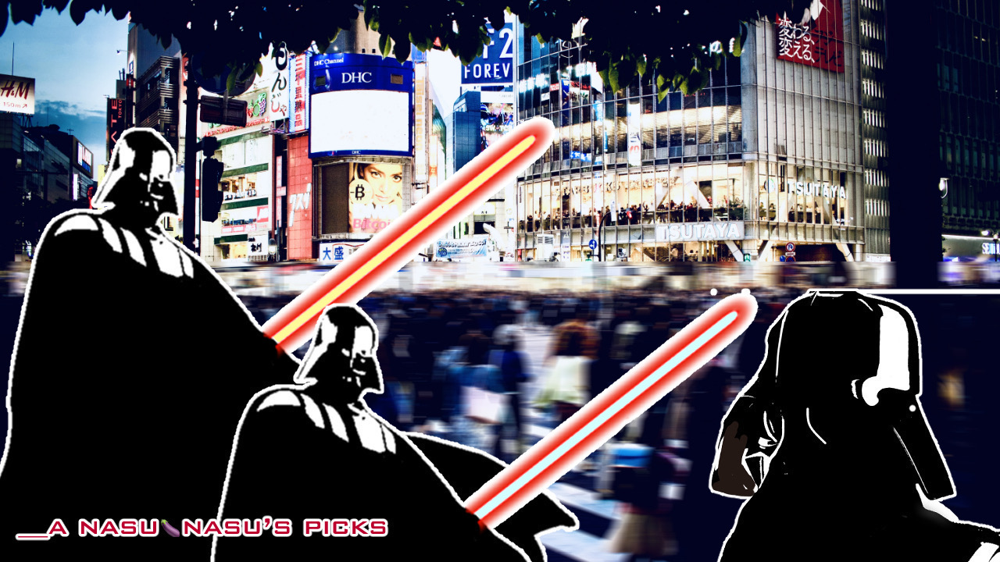

About Social Media in Japan
In the past, there used to be many social media platforms unique to Japan. 🐒
However, today, most of them have disappeared.😵
Instagram and one other platform are currently well-known, but to be honest, I don’t feel comfortable signing up for them.
Personally, I’ve always been quite busy, so I haven’t spent much time actively using social media.🤷
If this topic is unpleasant, I apologize.
For me, X (formerly Twitter) has mainly been a tool for gathering information about current events, rather than for posting. One reason I use it is because Japan experiences many earthquakes, and information about disasters spreads very quickly there. About half of the population uses it.🇯🇵📱
I also don’t own a TV, so I rely on the web for information. Although the number of users on X has decreased, there are still many people from different backgrounds and perspectives.
I find it useful because it allows me to see things from multiple viewpoints. 🌏👀
While there is an algorithm, I try to manage it carefully.
Recently, I’ve felt a desire to share Japanese culture with others. 🇯🇵
This comes from a concern that it may gradually be lost due to rapid modernization and globalization. ⚙️🔧
In many parts of the world, Asia is often seen as a single, similar region, but each place actually has its own unique culture.✨
However, I find it difficult to share content on X. This is partly because I have very few followers (since I mostly used it just for browsing), and also because the flow of information is too fast.🏎️💨
Using YouTube is not an option for me, so after some research, I discovered PeerTube.
🔍
Fortunately, I found a wonderful instance run by Mr. Funk E. Dude and I was able to join it.🍀
I had heard of Mastodon before, but I didn’t know about the concept of the Fediverse, so I used to think that X alone was enough for me.
However, since Mr. Funk E. Dude kindly invited me, I decided to try Mastodon, which I was already somewhat familiar with. 🐘
Since it is connected to PeerTube, I felt it would likely be a good platform, and that’s how I ended up there.😃🌟
#### __Additional Note__
I considered choosing a major Japanese blog service, even though there are a few ads, but a few months ago it fell under the control of Google and succumbed to the dark side. 👾🪐
In Japan, there are only blog services that have fallen to the dark side. Unfortunately, there are nothing but Darth Vaders everywhere.👾🗾👾
I recently became a GitHub user, but __I am not a programmer__. Unfortunately, I only have a little experience with HTML from a long time ago, so my website is quite simple.😵
After thinking carefully about how to create a website without collecting personal data, this was the option I arrived at. 🤔
It would be nice if there were more alternatives, but many options have also disappeared. In Japan, no matter which platform you choose, advertising systems such as those from large companies tend to be involved.
Since I’m working with limited knowledge and an older iPhone, there may be some rough edges, but I hope you can understand.🙏
